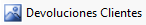
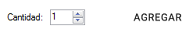

|
Crear una devolución
|
Anterior Inicio Siguiente |
1. Para ingresar una devolución debe hacer clic en de la pantalla
principal.
2. Sobre el CAMPO podremos buscar el pedido a devolver a
través de su número de CAE. Los artículos dentro de este pedido seleccionado, se
detallan en la grilla debajo.
3.Los artículos que deseemos agregar a la devolución se deben seleccionar y
posteriormente, indicar la cantidad en la parte baja del lado derecho de la pantalla, dentro
del cuadro  y presionando el botón a su derecha.
ACLARACIÓN: En caso de no corresponder el articulo a devolución, podemos quitarlo
seleccionando la línea y dando clic en el botón .